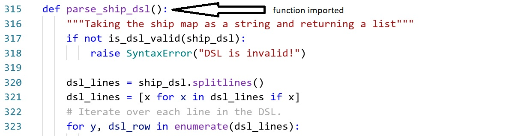

Partially Adapted from Matthes, Eric, "Chapter 8: Functions - Storing Your Functions in Modules", Python Crash Course (2 ed), No Starch Press, Inc., 2019
As you might have realized, more complex programs often require more lines of code. You can simplify the view of this code by breaking it into several files by category. For example, "Escape the Ship" has 4 modules: enemies.py, player.py, ship.py, and items.py. I separated blocks of code by category and stored them in modules. I then imported functions and variables into my main program.
An import statement tells Python to make the code in a module available in the currently running program file. Storing your functions in a separate file allows you to hide the details of your program’s code and focus on its higher-level logic. It also allows you to reuse functions in many different programs. When you store your functions in separate files, you can share those files with other programmers without having to share your entire program. Knowing how to import functions also allows you to use libraries of functions that other programmers have written. (Matthes, 150)
Look again at the game "Escape the Ship" and see all the module files
Looking at the example of "Escape the Ship", look at the file game.py. You will notice a statement import ship. If you look at player.py, you will notice import items and import ship on the top of the file. Similarly, in the file ship.py has import random, import enemies, import sys, and import items.
import [module]
means that the entire module is being imported (random and sys are from the Python Standard Library, but the entire module is being imported.)
Looking again at the game.py and ship.py files,

When a function from a module is called, you can see from above that it is in the form of
module_name.function_name()